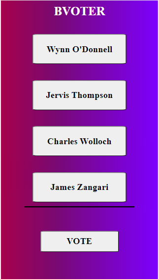
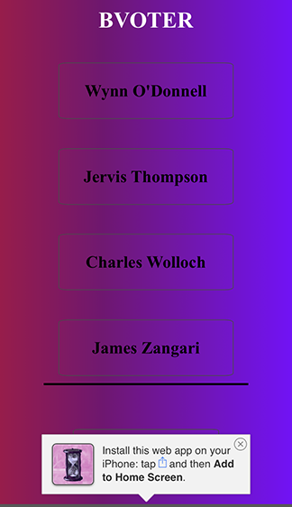
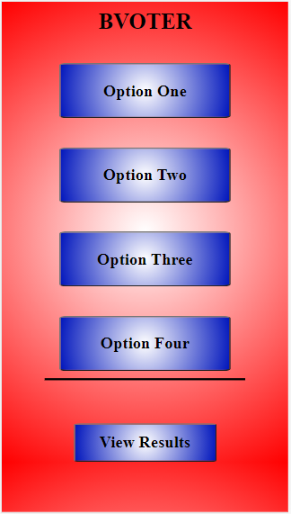
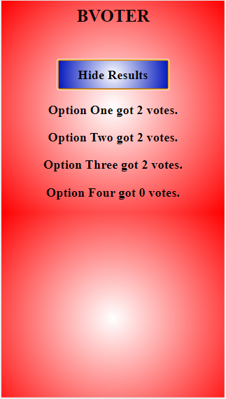
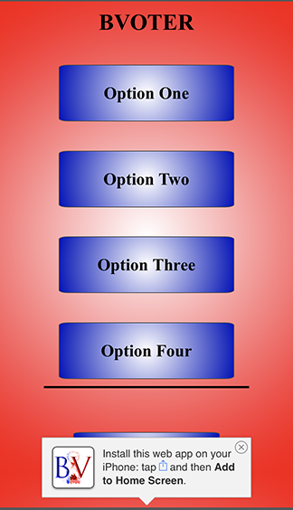
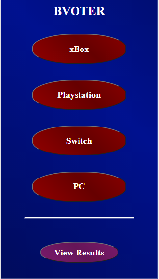
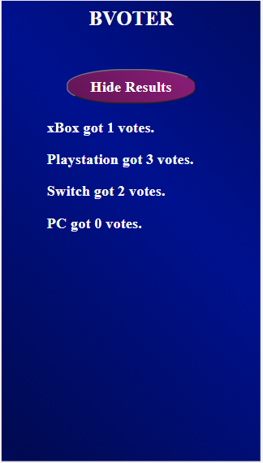
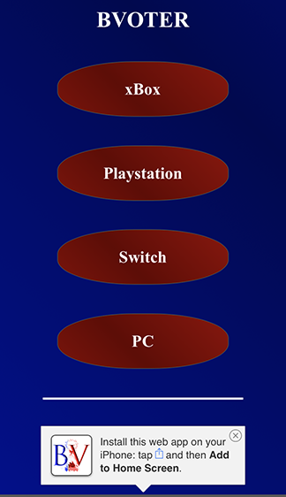

Overview:
In this project I wanted to create a fully functional online voting web app that friends could use to decide what they wanted to do, where they wanted to go to eat, or what thing more of them enjoyed. The project was created in HTML, CSS, and Javascript.
Background:
For a while I have been interested in the Alternative Vote system, also called ranked choice voting, so my original idea for this application was to create a web app that users could vote on that would use ranked choice voting to determine the outcome. I eventually moved away from this idea in order to flesh out a more simplistic voting system before I created a Ranked Choice web app.
Purpose:
To create a mobile application that allows users to vote on issues and then view the results of that vote.
The Problem:
At the beginning of this project I had used Javascript in a very limited capacity. I wanted to create a ranked choice voting system in a web application to show how it worked, and why it was better than a normal voting system, this would prove difficult in the coming weeks, and would eventually be reduced to a shell of the original idea.
Goals:
This project will be a success if I can create a ranked choice voting application that allows users to vote on anything they would like, and rank them based on how much they want that thing over the others.
Version 1:
For the first version I designed the layout of how I orignially wanted it to look. I used placeholder colors, and names in the voting slots, and the functionality was not yet present for it to be a working voting app. In did however feature an add to home prompt, that can be seen in the second image.

Version 2:
Version 2 was all about getting the functionality of the web application working. In version 2 I created and implemented a system in which voters could click on any of the buttons to vote for them, and then press view results in order to view the results of the vote (ie. how many times each button was pressed). The view results page also featured a hide results button which would take them back to the original page.

For this version I wanted to start building a ranked choice voting system into the application instead of having it just be a regular one person one vote system. Unfortuntally this proved much harder than I had expected and I wasn't able to get it done.
Final:
The final step of my process was creating a better style for my web application. For this I went with an American election theme, and implemented Red, Blue, and Purple (to represent the combination of the two) as my colors. I also added some sample text to the vote buttons, so that the user would know what they are voting for, in this case a console to play video games on.

Results:
Unfortuntally I don't think that my final product was a success for what I originally envisioned for this project. The version that I have is functional for what it is, but it isn't what I wanted to create. This is because I didn't have the time, resources, or skills that I would have needed to finish the Ranked Choice system that I wanted to create. Overall I learned a lot, especially about scope, and what is and isn't possible for me to create on my own in a short timeframe.